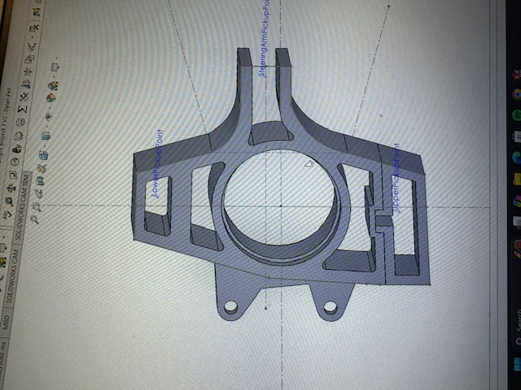
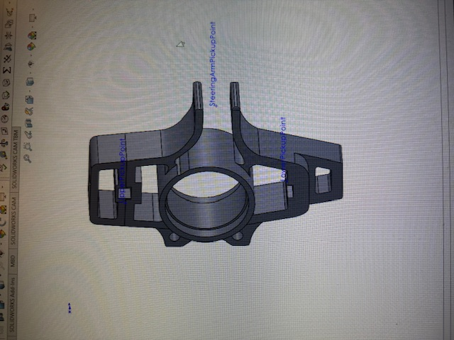

Engineering Portfolio
Mechanical Engineering · Liquid Propulsion & Fluid Systems
I design, build, and test liquid rocket propulsion hardware. My work has moved from single components, to owning a subsystem that flew, to architecting a full cryogenic fluid system from a blank sheet.
This portfolio is organized as a timeline. Each project records the problem, the constraints, the reasoning behind the design decisions, and how the result was validated. The through line is a progression from component design, to subsystem ownership on a vehicle that flew, to full-system architecture on a cryogenic stand.
LOX / Ethanol Liquid Bipropellant Rocket
Our previous vehicle, Project Poseidon, used nitrous oxide, which is self-pressurizing: the propellant supplies its own tank pressure through its vapor pressure, so there is no separate pressurization system to design. Moving to liquid oxygen removes that convenience. LOX has to be pushed, which means the whole pressurization architecture becomes something I had to design rather than inherit.
I owned the P&ID for that system: selecting the pneumatics, valves, and regulators, setting the pressure schedule, defining the interfaces between the pressurization, propellant, and ignition subsystems, and installing the result on our fluids test wall.
A single GN2 bottle blows down as gas is consumed. Treating the bottle as ideal gas,
supply pressure falls continuously through a test. A single spring regulator tracks that decay: spring regulators exhibit droop, where outlet pressure falls as inlet pressure drops and as flow increases, because the spring force is fixed while the sensing area sees changing conditions.
Inconsistent tank pressure means inconsistent chamber pressure, which means the engine is not being tested at the condition it was designed for.
My solution was a two-stage regulation scheme: a spring regulator sets the reference pressure in the dome of a dome-loaded regulator. The dome regulator references that near-constant dome pressure across a large diaphragm area rather than a spring, so its outlet stays essentially flat as the bottle decays and as flow varies. The spring regulator only has to hold a low-flow reference, which is the job it does well.
During checkout I measured a pressure drop across the GN2 lines that was larger than the budget allowed. Rather than raise the supply pressure to compensate, I traced it to undersized tubing and corrected the geometry.
The reasoning is the Darcy-Weisbach relation for major losses,
with the flow velocity set by continuity,
Substituting velocity into the pressure drop shows why line diameter dominates:
At fixed volumetric flow, pressure drop scales with the inverse fifth power of internal diameter. Going up a single tube size is worth far more than any amount of tuning elsewhere in the run, and it fixes the problem at its source instead of masking it with higher supply pressure. Upsizing the GN2 lines brought the drop back inside budget.
Fittings, valves, and bends were then added as minor losses,
with the friction factor from the Reynolds number,
Any volume that can be closed off at both ends by ball valves can trap fluid. With a cryogenic system this is not a theoretical concern: trapped liquid oxygen warming toward ambient expands by roughly a factor of 860 from liquid to gas, and in a rigid closed volume that becomes a pressure rise that will find the weakest component.
I walked the P&ID section by section, identified every volume that could be isolated between two valves, and placed a relief valve on each one. The rule I designed to was that no operator sequence, correct or incorrect, should be able to create a sealed volume with no path to relieve.
Each measurement point carries both a mechanical pressure gauge and a pressure transducer. This is deliberate redundancy with two different failure modes:
That distinction matters during a no-go: knowing whether the sensor is lying or the system is genuinely off-nominal determines whether you safe the stand or keep working.
The tanks divert a small portion of fuel and oxidizer to a torch igniter that lights the main combustion chamber. Sizing that bleed is an orifice problem,
The split has to deliver a reliable igniter flow without meaningfully disturbing the pressure or flow delivered to the main injector.
A complete pressurization, propellant, and ignition fluid system: GN2 supply feeding both pneumatic actuation and tank pressurization through two-stage regulation, run tanks for fuel and oxidizer, poppet pneumatic valve actuation, a torch igniter feed, relief protection on every isolable section, and instrumentation at each node reporting to the DAQ. The system is installed on our fluids test wall and is the stand the team now tests on.
I would build the pressure drop budget before selecting tubing rather than confirming it during checkout. The physics was not a surprise; I had the sizing tool that computes it. Running the numbers first would have caught the undersized run on paper and saved a rework cycle on hardware. It is the clearest lesson I have taken from this system: analysis is cheapest before you buy the fittings.
N₂O / Ethanol Liquid Bipropellant Rocket
Poseidon was UC Riverside's first liquid bipropellant rocket. Nothing existed to inherit: no prior feed system, no validated pressure vessel, no established test procedure. As Lead Fluid Systems Engineer I owned the pressure vessel and the integrated fuel and oxidizer feed system, from analysis through fabrication and test.
N₂O is self-pressurizing. At room temperature its vapor pressure sits near 700 to 750 psi, so the propellant supplies its own tank pressure without a separate pressurant system. For a first liquid vehicle this removed an entire subsystem and let the team concentrate on the engine, the structure, and the feed path.
The tradeoff is that vapor pressure is strongly temperature dependent, so tank pressure, and therefore engine performance, varies with ambient conditions on test day. That sensitivity is the reason our next vehicle moved to a separately pressurized architecture, which became Project Clementine.
The vessel was analyzed as a thin-walled cylinder, valid where the radius to thickness ratio is greater than about 10. Under internal pressure the wall carries a hoop stress and an axial stress,
Hoop stress is twice axial stress, so the hoop direction governs and sets the required wall thickness,
Design pressure was set from the maximum expected operating pressure with margin applied above it, rather than from nominal operating pressure, so that the structure is sized for the worst credible case rather than the intended one. The combined stress state was checked against yield using the von Mises criterion,
Material selection traded strength to weight against weldability and oxidizer compatibility, and the geometry was iterated in CAD against what the shop could actually produce and inspect.
The feed system had to deliver both propellants to the engine at the correct flow and pressure, sequence safely through fill and fire, and seal reliably. Line and orifice sizing followed the same incompressible relations used across the program,
with major and minor losses accumulated along each run to confirm the engine saw its design inlet condition rather than whatever the plumbing happened to deliver.
The pressure vessel, co-designed and fabricated: structural analysis, CAD iteration, and coordination with manufacturing until it was real hardware. Then the integrated fuel and oxidizer feed system, assembling and validating the feed lines, valves, and interfaces that connected tanks to engine.
Testing followed a deliberate ladder, each step qualifying the next:
The vehicle earned first place for Most Efficient Liquid Engine at the 2025 FAR-OUT Advanced Propulsion Rocketry Competition and reached 7,340 feet.
The pressure vessel that flew was drilled the night before the hot fire using a jig I designed and manufactured on the spot. That story is written up separately in Bulkhead Drill Jig.
I would instrument more heavily. We proved the system worked, but with more transducers across the feed path we would have had a far richer picture of how it worked, and a dataset to design the next vehicle against instead of starting Clementine's numbers from first principles again. The instrumentation density on Clementine is a direct response to this.
Python / MATLAB design automation
Every change to a feed system propagates. Change a tube size and the velocity, Reynolds number, friction factor, and pressure drop all move, which changes the tank pressure you need, which changes the regulator setpoint and the structural requirement on the tank. Doing that by hand takes long enough that in practice you stop exploring alternatives and commit to the first workable answer.
I wanted the team to be able to ask "what if this line were larger" and get an answer immediately, so that design decisions came from comparison rather than from whichever configuration someone happened to calculate first.
Given propellant properties, target mass flow, and a proposed line and tank geometry, the tool returns total pressure drop, flow rates, and line and tank sizing.
Flow velocity from continuity:
Reynolds number to establish the flow regime:
Friction factor from the Swamee-Jain explicit approximation, which avoids iterating the implicit Colebrook equation:
Major losses along each run:
Minor losses through valves, elbows, and fittings:
Summed to a system total, which sets the tank pressure required to deliver the design inlet condition at the injector:
The tool turned line sizing into a trade study rather than a guess. It is also what made the diagnosis on Project Clementine immediate: when the measured GN2 pressure drop came in high, the model said what the drop should have been for that geometry, which pointed straight at undersized tubing instead of leaving us to hunt.
I would build compressible flow handling in from the start. The incompressible relations are correct for the liquid propellant runs, but the high-pressure GN2 side is better described with compressibility and choked flow limits accounted for,
so that the tool covers the pressurant side with the same rigor as the propellant side.
Overnight fixture design under a test deadline
The night before we were due to travel out and hot fire the rocket, the pressure vessel was not prepped. The bulkheads could not be installed because the holes at the ends had not been drilled. Without those holes there was no vessel, and without the vessel there was no test.
The instinct under time pressure is to mark out the holes by hand and drill. I did not, because hand layout puts the positional accuracy of a flight part in a scribe line and a steady hand, and it has to be repeated independently at both ends. Each layout is a fresh opportunity to be wrong.
A jig moves the accuracy problem off the part and into a fixture. The hole pattern is established once, in the jig, and then transferred identically to every part and every end. The bolt circle positions follow directly from the pattern geometry,
where $n$ is the number of fasteners and $R$ the bolt circle radius. Locating off the jig also constrains the drill against wandering at entry, which on a curved surface is the most likely way to lose position.
Spending part of a very short night building a fixture rather than drilling immediately was the decision that mattered. It cost time up front and bought back accuracy and a second identical end.
The vessel was drilled, the bulkheads fit on both ends, and the pressure vessel was ready by morning. We travelled on schedule and ran the hot fire.
The jig should have existed before the night it was needed. The requirement was knowable weeks earlier. What this taught me is to look ahead at which operations on the critical path have no tooling yet, because those are the ones that turn into overnight problems.
Carbon fiber overwrap testing for higher tank pressure
Project Poseidon fed its engine from pressurized propellant tanks. Higher tank pressure raises chamber pressure, and higher chamber pressure raises thrust. What limits tank pressure is the tank wall itself: push a metal vessel too far and the wall stress reaches the material's yield point. You can allow more pressure by making the wall thicker, but that adds weight the vehicle then has to carry all the way up.
The question our small group set out to answer was whether a composite overwrapped pressure vessel, a COPV, could hold higher pressure without that weight penalty. I joined the effort as a general member.
A thin-walled pressure vessel carries a hoop stress that grows with pressure and radius and falls with wall thickness,
To allow more pressure in an all-metal vessel you raise $t$, and that adds mass around the entire vessel. A COPV takes a different route. A thin metal liner holds the gas and provides the seal, while a carbon fiber overwrap carries most of the pressure load in tension. Carbon fiber has a very high strength for its weight, so the overwrap buys pressure capacity for far less mass than the equivalent metal would. That trade is the reason COPVs are used on flight vehicles in the first place.
To turn a plain section of tube into a vessel we could actually pressurize, both ends had to be closed. I designed two bulkheads in SolidWorks to cap the ends of a smaller test vessel, and a drill jig to locate the fastener holes.
The jig was the part that mattered most. The holes in the bulkhead have to line up with the holes in the vessel, and drilling them by hand without a guide would not hit the same pattern twice. Locating them with tooling instead of by eye is the same reasoning I used again later on the Bulkhead Drill Jig for Poseidon.
With the vessel assembled, we wrapped carbon fiber around one of the two test vessels and left the other bare as a reference. The goal was to learn the process directly: how the fiber is tensioned and oriented, how the layup goes down, and how the overwrapped vessel behaves under pressure compared to the bare one.
Two bulkheads and a drill jig, all designed in SolidWorks, that turned a small tube into a sealed, testable pressure vessel. Working with two teammates, I helped assemble the vessels and overwrap one of them in carbon fiber to make the COPV test article.
We pressurized both articles and compared the bare vessel against the carbon fiber overwrapped one, so we could see directly how much pressure capacity the overwrap added rather than estimating it. That comparison, together with what it took to build and handle a COPV as a student team, is what the program used to weigh whether a COPV belonged on Poseidon.
I would instrument the pressure test more heavily. We compared the two articles, but with more measurement across the wall we would have understood how the overwrap carried load, not only the point it reached, and we would have had data to design the next article against.
The more honest lesson is about what the project was really for. We did not end up putting a COPV on Poseidon. What we kept was the carbon fiber capability: we used what we learned about composite layup to build lightweight housings for the fluid components exposed underneath the pressure vessel, on the line running to the combustion chamber. The COPV was the goal we set, but the composites skill was the result we actually carried forward, and it went on to fly on Project Poseidon.
Three design iterations for manufacturability

The upright carries wheel loads into the suspension and locates the hub, so it needs tight tolerances on its critical features. The first design achieved that geometry but was expensive to make: complex features and awkward tool access meant more machining operations than the part warranted.
A part that cannot be produced accurately and repeatably with the equipment actually available is not a finished design, regardless of how it performs in CAD.
Across three iterations I worked the geometry against the manufacturing process rather than only against the load case. The levers that mattered:
The net result was roughly a 25% improvement in manufacturability by reduced machining complexity and better feature accessibility, while preserving the precision required at the hub and mounting interfaces.
I would involve whoever is cutting the part in the first iteration rather than the second. Most of what I found in cycles two and three, a machinist would have flagged in five minutes looking at cycle one. Design for manufacture works far better as a conversation than as a solo review.
